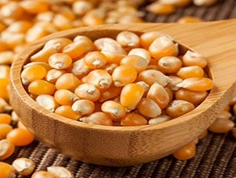
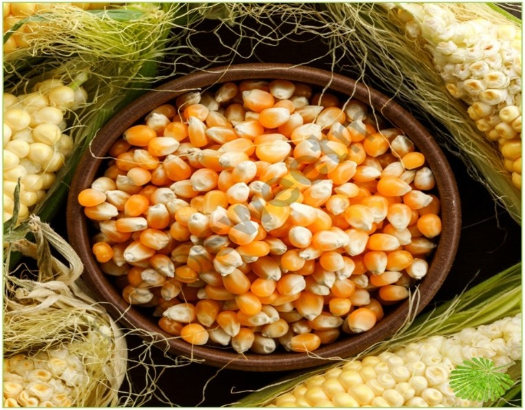
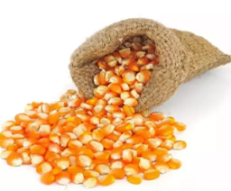

Corn Kernel
Corn kernels are the fruits of corn, also known as maize. Maize is a grain, and the kernels are used in cooking as a vegetable or a source of starch.
Discription
The kernels can be of various colors: blackish, bluish-gray, purple, green, red, white and yellow. One ear of corn contains roughly 800 kernels in 16 rows.
One hundred bushels of corn can contain upwards of 7,280,000 kernels Transportation and packaging of dried clean corn kernels to non-producing areas adds to the cost.
Corn kernels are readily available in bulk throughout maize-producing areas. The kernel comprise endosperm, germ, pericarp, and tip cap.
Use
The kernels are used in cooking as a vegetable or a source of starch. Corn is a popular food throughout the world in many forms. It is used in breakfast cereals in the Western world (as corn flakes) and it is a grain It may be fed to animals or humans. In the United States, for economic reasons such as government subsidies, corn is the basis of many products, in the form of high fructose corn syrup, in Favor of cane sugar. A genetic variant that accumulates more sugar and less starch in the ear is consumed as a vegetable and is called sweet corn.
Corn kernels have a number of uses, including food, biofuel, and bioplastics. Corn kernels are used as pelletized fuel for pellet stoves and furnaces. Corn kernels are a natural pellet, which gives them an economic advantage over other man-made biomass pellets and wood pellets.